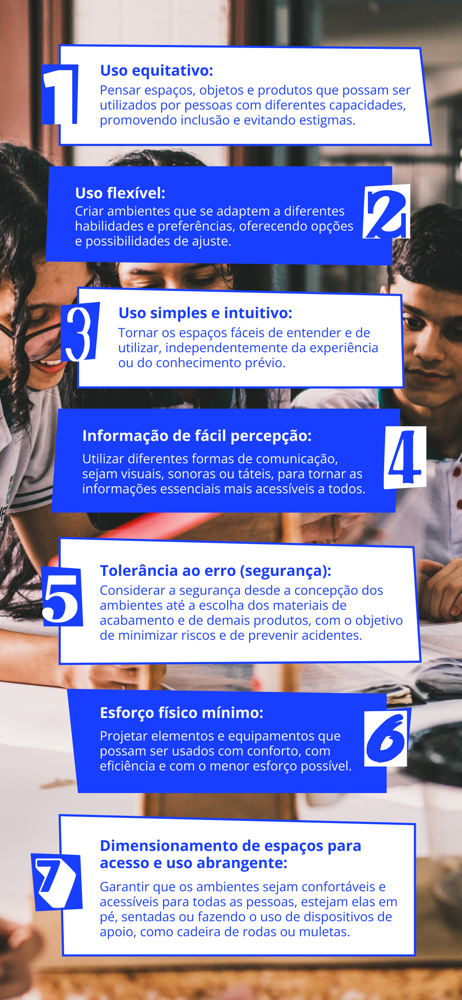
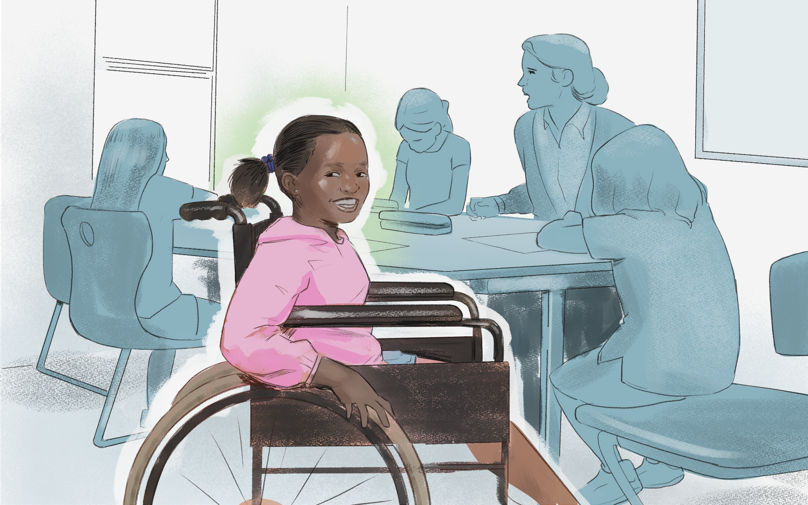

Práticas de gestão e acessibilidade
O trabalho da gestão pública escolar tem papel importante na criação de ambientes educacionais que sejam acessíveis, inclusivos e adaptados para todos os estudantes, independentemente de suas habilidades ou limitações. Isso abarca uma variedade de aspectos, desde a infraestrutura física das escolas até a formação de professores, bem como a promoção da diferenciação curricular e a disponibilidade de recursos e de apoios necessários para atender às necessidades específicas dos estudantes PcDs, TGD e com altas habilidades.
Desse modo, não basta garantir apenas a presença física das pessoas da Educação Especial na escola, mas assegurar seu engajamento e sua participação para a efetiva permanência. Para tanto, é fundamental construir ações pautadas no princípio da acessibilidade universal. Em outras palavras, fazer uma escola acessível é eliminar barreiras físicas, pedagógicas e atitudinais que possam impedir a participação plena dos estudantes. É uma condição essencial para efetivação de Ações Afirmativas. Assim, além de adaptar os ambientes físicos das escolas, é preciso viabilizar o acesso a recursos pedagógicos, tecnológicos e de apoio que permitam a todos os estudantes desenvolverem seu potencial.

Título: Os princípios da acessibilidade universal
Fonte: Schüler (2024).
Elaboração: Prosa (2025d).
Entre as diversas ações, certamente a formação dos docentes e de toda a equipe é crucial, pois todos devem ser mobilizados a incorporar valores e princípios da Educação Inclusiva. Mas no que tange à formação de professores, surge o desafio de realizar a diferenciação curricular. Ou seja, os professores precisam aprender a adaptar seu ensino para atender às diferentes habilidades, aos estilos de aprendizagem e às necessidades dos estudantes, garantindo um aprendizado significativo. Além disso, é importante que eles estejam cientes dos aspectos sociais, econômicos, culturais e emocionais que podem afetar o desempenho acadêmico de seus alunos.
É importante lembrarmos que o estudante da Educação Especial carrega várias camadas de identidade, também podendo ser uma pessoa negra, fazer parte da comunidade LGBTQIAP+, não ter recursos financeiros para um acompanhamento de saúde e/ou sofrer violência de gênero. Portanto, compreender as camadas interseccionais que promovem a exclusão e que ampliam as barreiras que o estudante PcD, TGD ou com altas habilidades pode ter é imprescindível para promover sua inclusão. Isso implica mobilizar diversos setores, núcleos e grupos de pesquisa que atuam na área para pensar como múltiplos fatores estão criando barreiras diversas para a acessibilidade.

Título: A interseccionalidade das camadas de identidade
Fonte: Prosa (2025e).
Cabe aos docentes e à toda equipe criar um ambiente acolhedor e inclusivo em suas salas de aula, bem como criar recursos pedagógicos acessíveis. Como poderia ocorrer uma aula de Química, por exemplo, com estudantes cegos ou com baixa visão que teriam dificuldades de observar fenômenos? Será que fazer uma aula com analogia a outras percepções e sensações que os estudantes tenham seria um caminho? Essas questões evidenciam a importância de uma formação que capacite docentes a construírem mediações pedagógicas que garantam a justiça curricular. Nesse sentido, de acordo com Maria Helena Vasconcelos e Cláudia Paz (2020), a efetividade da intervenção docente em uma sala de aula comum está atrelada à necessidade de transformar práticas pedagógicas, adotar estratégias inovadoras, ajustar ou reformular currículos, utilizar técnicas e recursos específicos voltados para estudantes com necessidades educacionais especiais (NEE) e implementar novas formas de avaliação. Essas mudanças não apenas atendem às necessidades desses estudantes, mas também promovem uma nova dinâmica de aprendizagem que beneficia toda a turma.
A formação docente precisa também caminhar para que os professores sejam agentes que discutam as políticas, os projetos e os programas implementados. Saber a quem cobrar e o que cobrar, compreendendo que a garantia da acessibilidade passa por diversas instâncias, também é um caminho para conquistar o corpo docente para a defesa da inclusão.
Outro movimento importante para a inclusão diz respeito à remoção de barreiras arquitetônicas e físicas nas escolas, garantindo que os espaços sejam acessíveis a todos. Para isso, pode ser necessária a instalação de rampas, de corrimãos, de elevadores e de banheiros adaptados, além da adequação de lousas e da acústica das salas, bem como alterações no refeitório, nas áreas esportivas, nos laboratórios, entre outros.
Cabe destacar que muitas dessas barreiras podem ser solucionadas com decisões sobre como distribuir os recursos já disponíveis. Isso inclui, por exemplo, alocar salas de aula em áreas sem degraus para turmas com estudantes cadeirantes ou organizar a distribuição da carga horária docente em favor da qualificação do atendimento às turmas que possuem estudantes PcD, além de outras ações possíveis.
Às vezes, outras demandas podem exigir que a turma de um estudante cadeirante e outro com baixa visão seja deslocada para outro pavimento do prédio. Em tal situação, no entanto, é preciso considerar que isso poderá implicar em um percurso mais longo e com a presença de alguns obstáculos físicos, o que pode dificultar tanto a locomoção de quem usa cadeira de rodas ou de quem tem baixa visão. Nesse momento, então, é fundamental que a direção da instituição se posicione em favor da garantia daquilo que for mais acessível a esses estudantes, sem sacrificar uma necessidade em detrimento da outra.
Há situações mais complexas – e até polêmicas – do que esta apresentada. Imaginemos o seguinte fato:
Um jovem com deficiência física, sendo ele cadeirante, cansou-se de ficar segurando o xixi até chegar em casa, pois o banheiro para uso dos estudantes ficava muito longe de sua sala e as portas dificultavam a passagem de sua cadeira de rodas. Assim, em um ato de rebelião, ele resolveu urinar ali mesmo na sala, de roupa e tudo. E, sendo a era das redes sociais, o estudante fez um vídeo denunciando o ocorrido, que logo viralizou. A direção da escola, ao receber representantes da família do jovem, além de organizações e de movimentos sociais que acompanharam o caso, desabafou: “Vocês não sabem o que enfrentamos aqui! São muitas demandas e poucos recursos. Ou adequávamos o banheiro da escola ou atendíamos outras necessidades que atingem a maioria dos estudantes!”
A situação, que pode parecer extrema, aponta algumas questões que atravessam as decisões da gestão escolar. É fato que os recursos são escassos e que nem sempre é possível atender a todas as demandas, mas se deve considerar apenas o critério da maioria como o único quando se decide investir em algum espaço ou equipamento?
De acordo com o Instituto Nacional de Estudos e Pesquisas Educacionais Anísio Teixeira (Inep), que tem como função produzir, sistematizar e divulgar informações, estudos e avaliações sobre a educação brasileira, os dados do Censo Escolar de 2023 apontam que, no Ensino Médio, foram matriculados 223.258 estudantes na Educação Especial. No entanto, o total das matrículas nessa etapa de ensino foi de 7,7 milhões. Se o critério for sempre a maioria, o que fazer com os direitos humanos e educacionais dos 223.258 estudantes matriculados?
.png)
Título: A realidade da educação brasileira sobre estudantes com deficiência
Fonte: Ministério da Educação (2025).
Elaboração: Prosa (2025f).
As políticas de acessibilidade física também devem englobar as questões de transporte escolar e de infraestrutura externa das escolas, sobretudo se pensarmos na necessária indissociabilidade entre ensino-pesquisa-extensão, pois é preciso garantir que estudantes com mobilidade reduzida, por exemplo, possam chegar ao ambiente escolar ou a uma comunidade com segurança e facilidade. Sem essa consideração, comprometeríamos a formação integrada dos estudantes da Educação Especial.
No campo das barreiras materiais, faz-se importante pensar na acessibilidade tecnológica, principalmente quando voltadas às tecnologias assistivas, como leitores de tela, ampliadores de texto, máquinas de braille, entre outros. Para tanto, a gestão precisa buscar viabilizar a aquisição dessas tecnologias assistivas, além de oferecer treinamento e suporte adequados tanto para os estudantes que precisarem destes materiais de aprendizagem para atender suas necessidades individuais quanto para a equipe escolar.
Embora as Tecnologias Assistivas sejam ferramentas fundamentais para a superação de barreiras no processo educativo, é importante lembrar que a inclusão não começa nem termina nelas. A construção de uma instituição verdadeiramente inclusiva envolve políticas que garantam o acolhimento, a aprendizagem e a participação de todos os estudantes nas atividades cotidianas, além de processos formativos e curriculares que considerem as diferentes demandas relacionadas à inclusão.
A ilustração a seguir apresenta apenas exemplos de Tecnologias Assistivas que visam auxiliar pessoas com deficiência motora, sendo instrumentos de reabilitação e de melhoria da qualidade de vida. No entanto, conhecer apenas esse recorte não é suficiente. Por isso, convidamos você, cursista, a ampliar o debate e explorar outras tecnologias que atendam às diversas formas de deficiência. Esse movimento é fundamental para aprofundar a compreensão sobre inclusão e responder de forma mais atenta às diferentes necessidades existentes.
.png)
Título: Exemplos de tecnologias assistivas
Fonte: Prosa (2025g).
Muitos dispositivos legais, entre eles, a Lei Brasileira de Inclusão da Pessoa com Deficiência (Lei nº 13.146, de 06 de julho de 2015), a Lei de Diretrizes e Bases da Educação e o Plano Nacional de Educação, responsabilizam todos os entes federados pela implementação das políticas educacionais, bem como também responsabilizam gestores educacionais e escolares públicos pela acessibilidade ao espaço físico e aos conhecimentos socialmente construídos e referenciados. Entretanto, apesar de haver uma responsabilidade legal sobre a gestão, essa tarefa não será eficaz se for assumida solitariamente. É preciso o trabalho colaborativo.
Para refletir: adaptações para inclusão
Chegamos ao segundo momento reflexivo deste capítulo. Lembre-se de registrar suas reflexões em seu Memorial e/ou seguir as orientações do seu tutor.
Sua instituição de ensino já fez adaptações para estudantes PCDs, como mudanças arquitetônicas ou aquisição de equipamentos?
Se sim, como essas alterações colaboraram para a inclusão destes estudantes?
Caso não, que tipo de adaptações você identifica que seriam necessárias para receber estudantes com deficiência física/motora, visual, auditiva e intelectual, de modo a viabilizar sua inclusão?